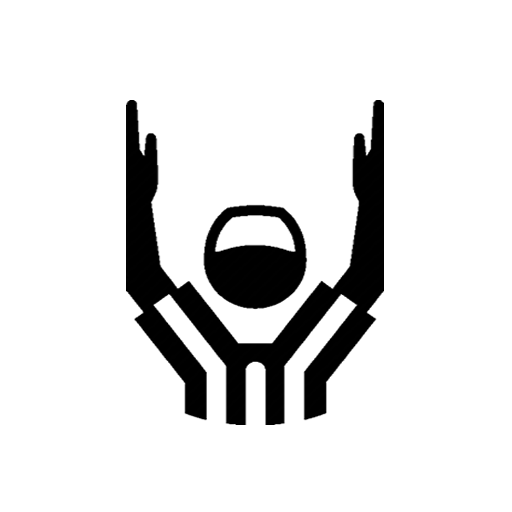

<ion-header [translucent]="true">
  <ion-toolbar>
    <ion-buttons [collapse]="true" slot="start">
      <ion-button fill="clear" shape="round" routerLink="/cronome">
        <ion-icon slot="icon-only" name="chevron-back-outline"></ion-icon>
      </ion-button>
    </ion-buttons>
    <ion-title class="ion-text-center">
      Anotaciones
    </ion-title>
    <ion-buttons [collapse]="true" slot="end">
      <ion-button fill="clear" shape="round" routerLink="/cronome">
        
      </ion-button>
    </ion-buttons>
  </ion-toolbar>

  <ion-segment [value]="equipo" [(ngModel)]="equipo" mode="ios" (ionChange)="fncInfoEquipo()">
    <ion-segment-button value="visitante">
      
      <ion-label style="font-size:x-small;text-transform:uppercase;">Azur</ion-label><br/>
    </ion-segment-button>
    <ion-segment-button value="local">
      
      <ion-label style="font-size:x-small;text-transform:uppercase;">Amazonas renegados</ion-label><br/>
    </ion-segment-button>
  </ion-segment>

  <ion-segment [value]="puntos" [(ngModel)]="puntos" mode="ios">
    <ion-segment-button value="6">
      <ion-label>6 pts</ion-label>
    </ion-segment-button>
    <ion-segment-button value="1">
      <ion-label>1 pt</ion-label>
    </ion-segment-button>
    <ion-segment-button value="2">
      <ion-label>2 pts</ion-label>
    </ion-segment-button>
    <ion-segment-button value="3">
      <ion-label>3 pts</ion-label>
    </ion-segment-button>
  </ion-segment>

  <ion-list>
    <ion-item>
      <ion-input [value]="numanota" [(ngModel)]="numanota" label="Jugador que anota" type="number"></ion-input>
    </ion-item>
    <ion-item>
      <ion-input [value]="numlanza" [(ngModel)]="numlanza" label="Jugador que lanza" type="number"></ion-input>
    </ion-item>
  </ion-list>

  <ion-grid>
    <ion-row>
      <ion-col></ion-col>
      <ion-col>
        <ion-button expand="block" (click)="guardaAnotacion()">{{accionGuardar}}</ion-button>
      </ion-col>
    </ion-row>
  </ion-grid>

</ion-header>

<ion-content [fullscreen]="true">

  <ion-fab routerLink="/cronome" class="btnBack">
    <ion-fab-button>
      <ion-icon name="close-outline"></ion-icon>
    </ion-fab-button>
  </ion-fab>

  <ion-list [inset]="true" *ngFor="let item of listAnotaciones">
    <ion-item-sliding>
      <ion-item [button]="true" (click)="editarAnotacion(item)">
        <ion-avatar aria-hidden="true" slot="start">
          
        </ion-avatar>
        <ion-label>
          <b>#{{ item.numanota }}</b> {{ item.equipo }}
          <br/><small>Lanzó <b>#{{ item.numlanza }}</b></small>
          <br/><small>{{item.medio}} D{{item.down}} {{item.tiempo}}</small>
        </ion-label>
        <ion-badge slot="end">{{item.puntos}}</ion-badge>
      </ion-item>
      <ion-item-options slot="end">
        <ion-item-option id="popover-anotacion" color="danger" expandable="true" (click)="borraAnotacion(item)">
          <ion-icon slot="icon-only" name="trash"></ion-icon>
        </ion-item-option>
      </ion-item-options>
    </ion-item-sliding>
  </ion-list>

</ion-content>
